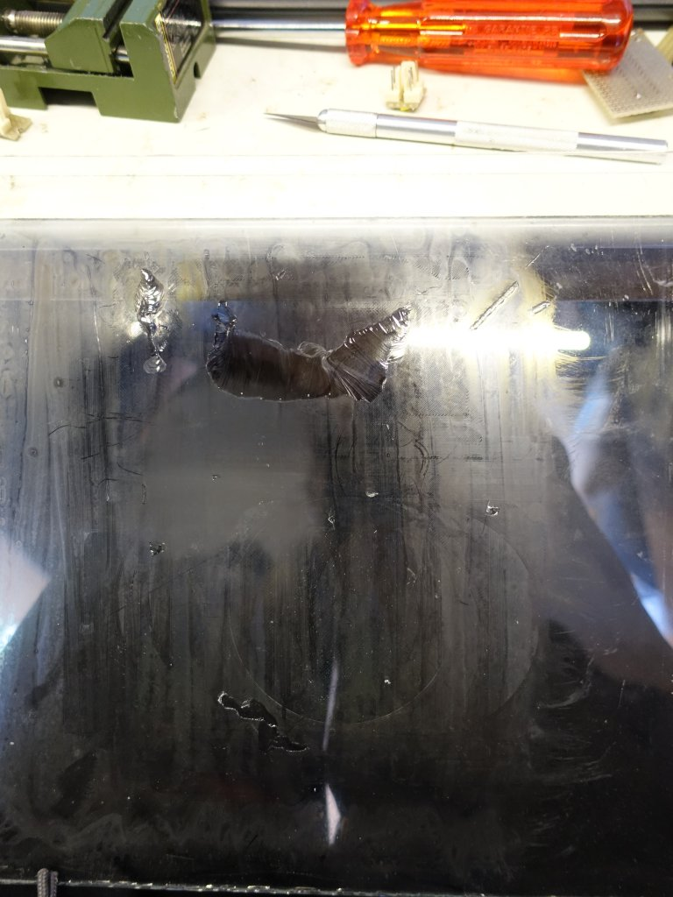
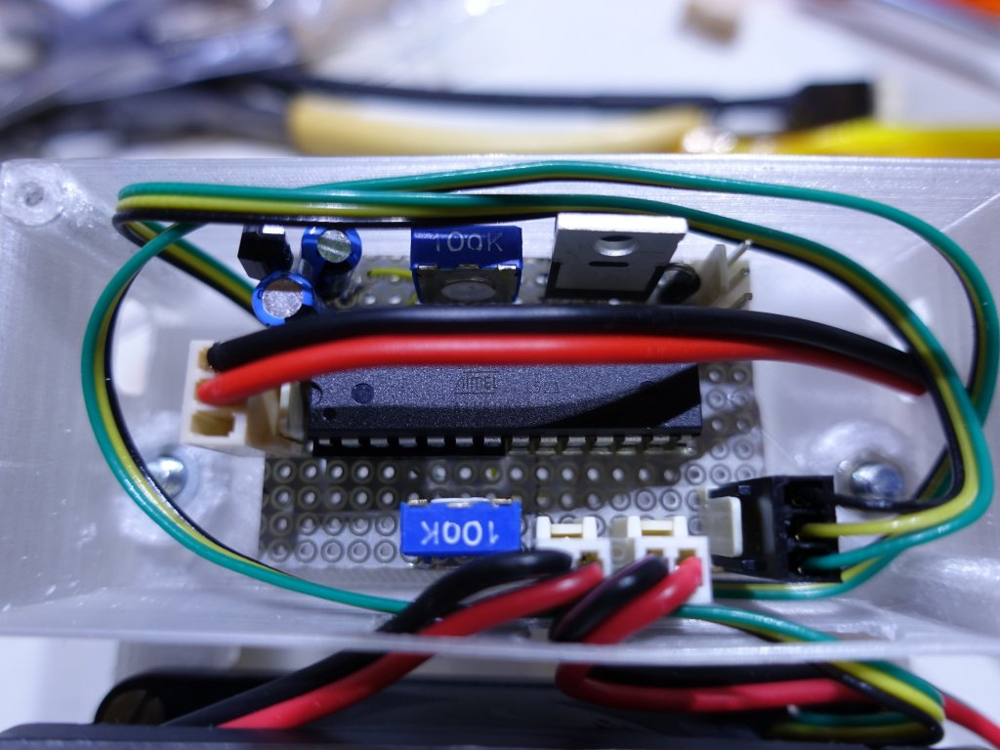
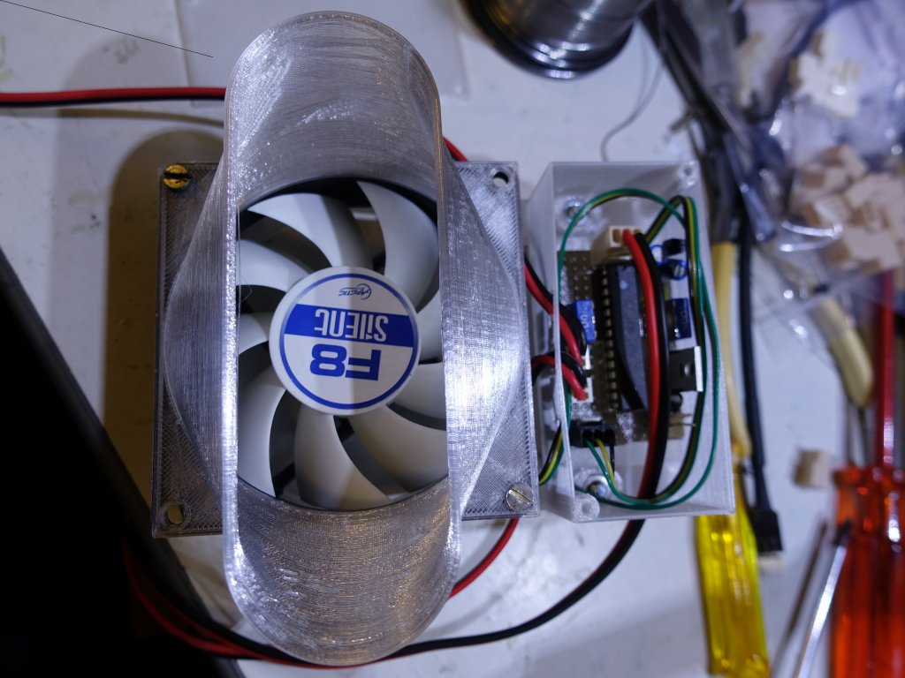
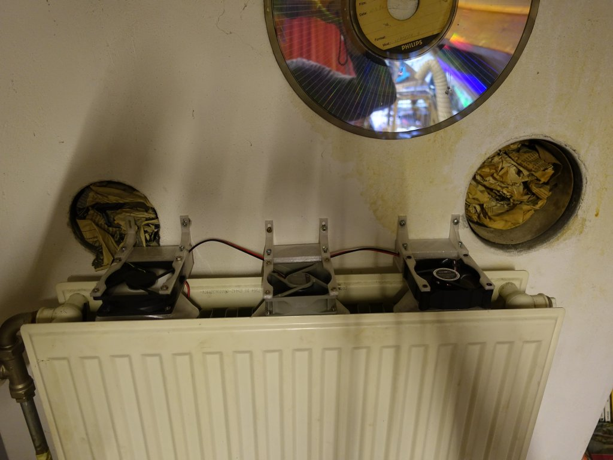
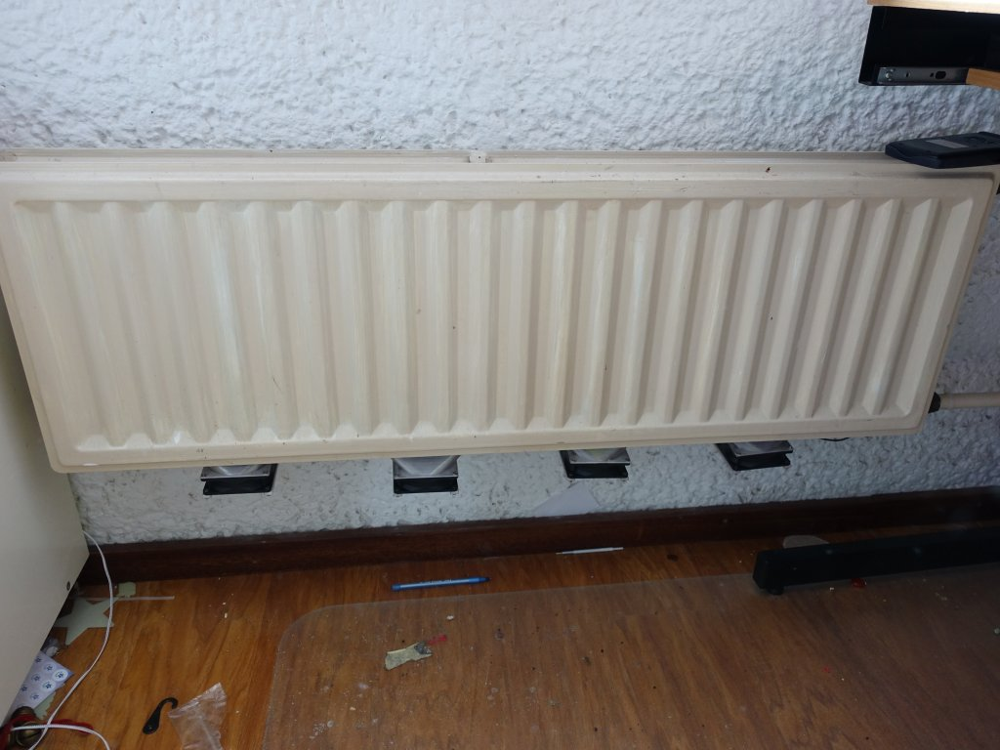
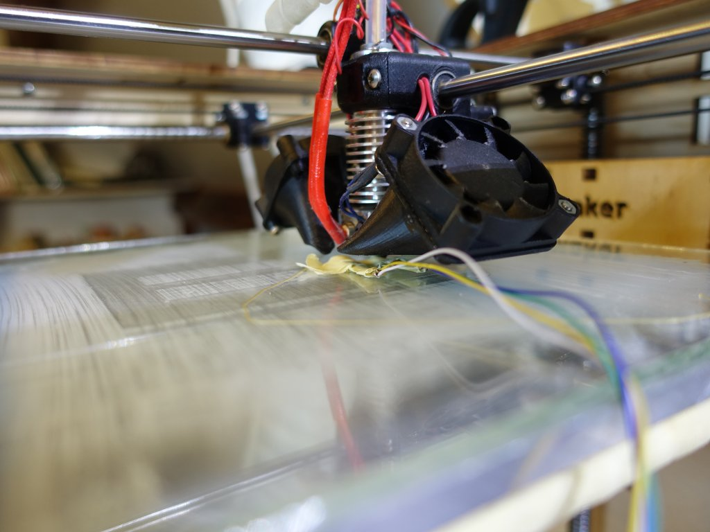

In voor bereiding van het gebruik van een warmtepomp heb ik voor de badkamer en de kinder kamers de radiator geoptimalizeerd met een
ventilator om een geforceerde lucht stroom te creeren. Eigenlijk zouden de radiatoren vervangen moeten worden met lage temperatuur
varianten voor het toepassen van een warmtepomp. Dit is een poging om de vervanging te voorkomen. Er is een kant en klaar product waarmee
je dit kan doen namelijk de speed comfort.
Speed comfort
Op zich een prima product maar als je die onder de radiator met zijn magneten in klikt dan ontstaat er een geluids trillings overgang
waardoor de radiator als een klank kast gaat werken waardoor je de ventilator sterk gaat horen. Dus ben ik zelf wat gaan bouwen. Hoofd
idee gebruik standaard verkrijgbare ventilatoren en monteer die aan de muur vast en niet aan de radiator zodat er geen geluids overdracht
kan plaats vinden. Hier is een rendering van het design:

Het ontwerp is gebaseerd voor toepassing van smalle (5cm tussen ruimte) radiatoren zoals ik die in huis heb. Voor de modernere
breede varianten kan het design ook gebruikt worden maar valt de ventialor al bijna geheel tussen de platen. Ik heb 8cm ventilatoren toegepast niet te klein want die maken snel teveel herrie en niet te groot om te kunnen gebruiken. Een ventialor krijgt een microcontroller
die besluit of de ventilator moet draaien of niet en de rest van de ventilatoren kan parallel aangesloten worden. Typisch heb ik 4 ventilatoren per radiator nodig maar dat ligt niet vast. Nu nog het vinden van een stille 8cm ventilator. Dat was niet eenvoudig. Ik heb
3 varianten aangeschaft om te testen hoe die zich gedragen namelijk:
Sunon 9.6cm €4.25
Arctic 8cm €3.66
Noiseblocker 8cm €12.96
Noctua 8cm €11.13
Mijn persoonlijke ervaring is dat de Sunon echt wel geluid maakt en dus ongeschikt is. De Noctua heeft nog wat motor geluid en heeft een zeer lasige aan/uit karakteristiek (laat zich slecht met pwm regelen). Blijft over de Noiseblocker en de Arctic. Beiden lopen soepel bij volle 12V is de Arctic iets hoorbaarder maar op deellast is de Noiseblocker zijn motor iets meer te horen. De afwerking van de behuizing van de Noiseblocker is zeer goed en geluid dempend. Maar omdat ik direct op de muur monteer heb ik toch voor de stille Arctic gekozen want het prijs verschil is best groot plus Arctic probeerd het milieu te sparen door efficiente verpakking te gebruikten en dat is te zien ook.
Voor het 3D printen heb ik gebruik gemaakt van ColorFabb XT. Het voordeel is dat het iets beter tegen een wat hogere temperatuur kan (75 graden) dan PLA (50 graden). Het materiaal kript weinig tijdens het printen in tegen stelling tot b.v. ABS. En het is bijna reukloos tijdens het printen. Ik vind het wel iets lastiger te printen dan PLA het druipt iets meer en de hechting wil soms ook nog wel eens een probleem zijn. Ik heb daarom alles met een brim geprint voor goede hechting. Dit is het resultaat als je alle onderdelen in een keer print:

Duidelijk zichtbaar zijn de onregelmatig heden op de kap. Dit komt omdat de want nogal dun is en dus makkelijk heen en weer kan gaan tijdens het printen. Daar ook het bakje geprint word moet de kop steeds heen en weer gaan van de een naar de ander en moet het materiaal steeds weer op gang komen. Doordat de ondergrond van de kap heen weer kan gaan krijg je de onregelmatigheden. Dit is redelijk te bestrijden om alleen de kap te printen en niet het bakje tergelijkertijd. Maar dat is meer prints starten en stoppen het is maar wat je wil. Ik monteer de onregelmatige kant naar de muur toe en dan zie je er toch weinig van. Tja de hechting is soms ook wel eens te goed mijn glasplaat heeft het begeven tijdens deze printen:

Voorde aansturing heb ik een microcontroller van Atmel gebruikt de AT-mega8. Dit is een processor die ik bijna voor al mijn projecten gebruik. Lekker compact maar toch nog redelijk wat aansluitingen. In principe zou ook een Arduino micro gebruikt kunnen worden maar dat is wel duurder dan de losse processor gebruiken. Ik heb ook niet de standaard 10 pin programmer interface aangelegd ik heb een 28 pins clip die ik op de chip click en dan programmeren maar. Het schema is vrij eenvoudig een spannings regulator 5V, micro controller, 2 instel potmetertjes (een voor de temperatuur voor instelling en een voor de fan snelheid instelling) en twee ntc weerstanden. Ik maak gebruik van 2 ntc weerstanden zodat het verschil gemeten kan worden tussen de verwarming en de omgeving. Daarmee is het mogelijk om met een paar graden temperatuur verschil te kunnen inschakelen zonder dat de omgevings temperatuur dit sterk beinvloed. Dus de warme sensor bij de inlaat van de radiator en de koude sensor ergens onderaan de raditor in de lucht laten hangen. Ik had eerst de koude sensor op de retour leiding geplaatst maar dat werkt minder goed in het geval dat er niet veel warmte overdracht is.

Als er geen snelheids control nodig is dan zou het ook zonder de micro controller kunnen. Een vast voeding van 12 of 9V en een opamp b.v. LM324 en de uitgang van de opamp aansluiten op de gate van de IRLZ34N. Dan kan je de ventilator niet harder of zachter zetten maar misschien is dat ook wel oke.
Hier is een foto van mijn printje. Het kan dus best klein zodat het in het bakje past.

Nu eindelijk de master ventilator waar de micro controller in zit:

De andere ventilatoren hebben allen een interconnect nodig en geen controller zodat je alleen 1 controller per radiator nodig hebt.
Je kan de ventilatoren boven de verwarming gebruiken zoals ik in 'mijn' kamer doe want vlak onder de radiator loop een aanvoer buis:

Of het mooiste onder de radiator monteren:

Om te testen of de sensoren echt onafhangelijk van de omgevings temperatuur zijn heb ik de 3D printer leuk kunnen gebruiken. Monteer beide sensoren op je heated bed en verwarm die iets. Dan moet er geen signaal komen want er is geen verschil temperatuur. Nu met een lage temperatuur instelling van je hotend het hotend tegen een van de sensoren aan parkeren en zo kan je 1 van de sensoren op een gecontrolleerde manier van een andere temperatuur voorzien.
